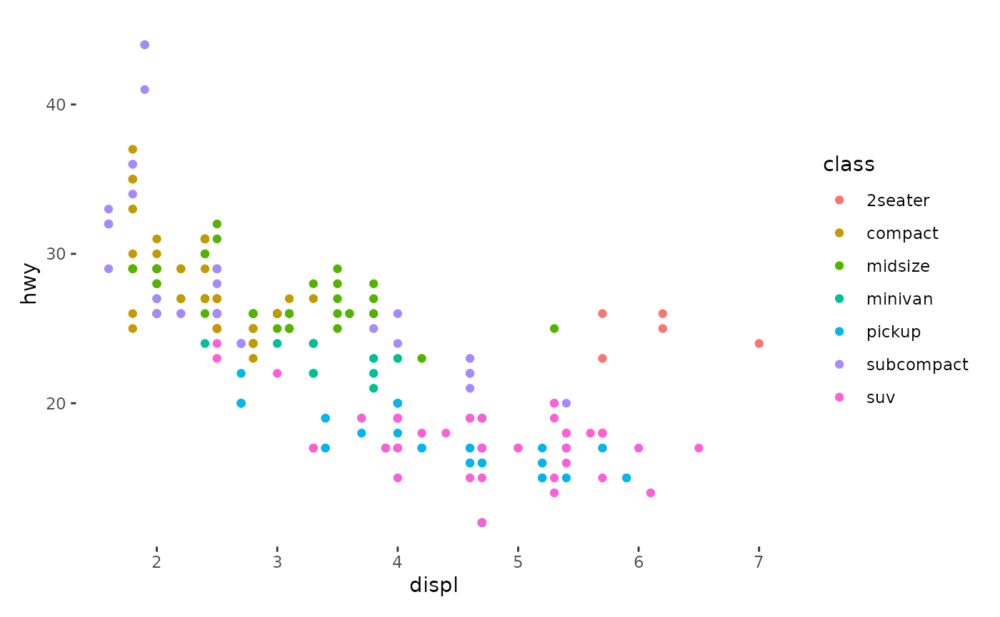
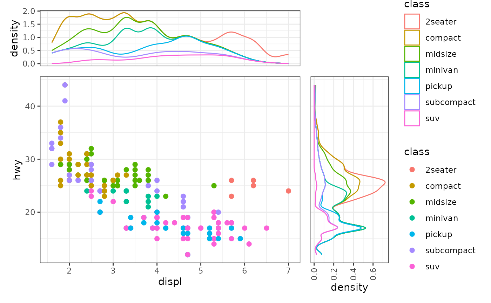
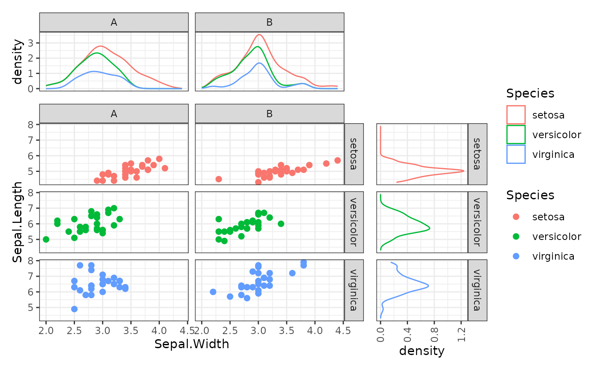
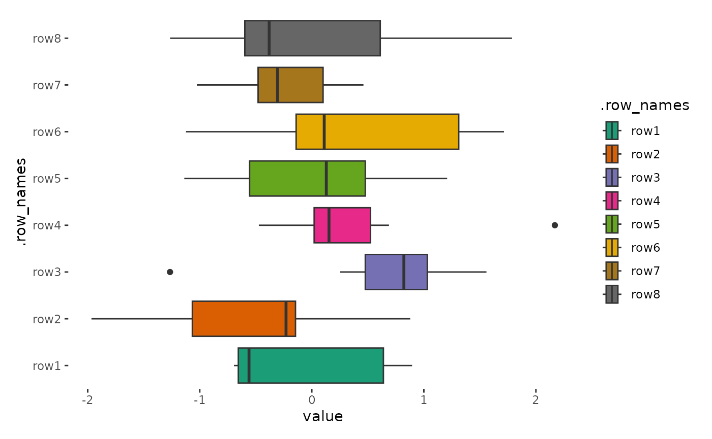
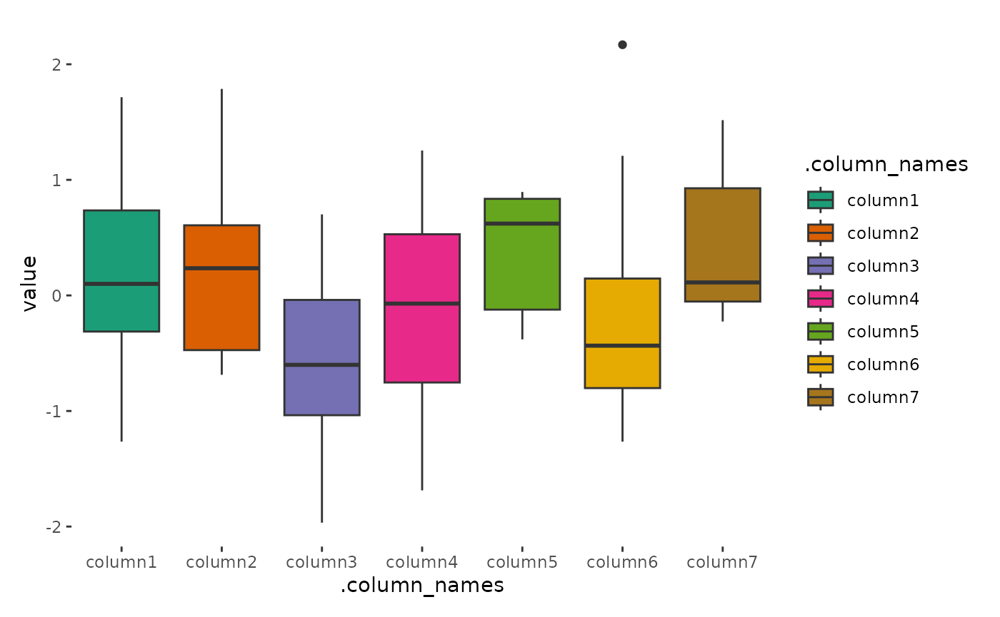
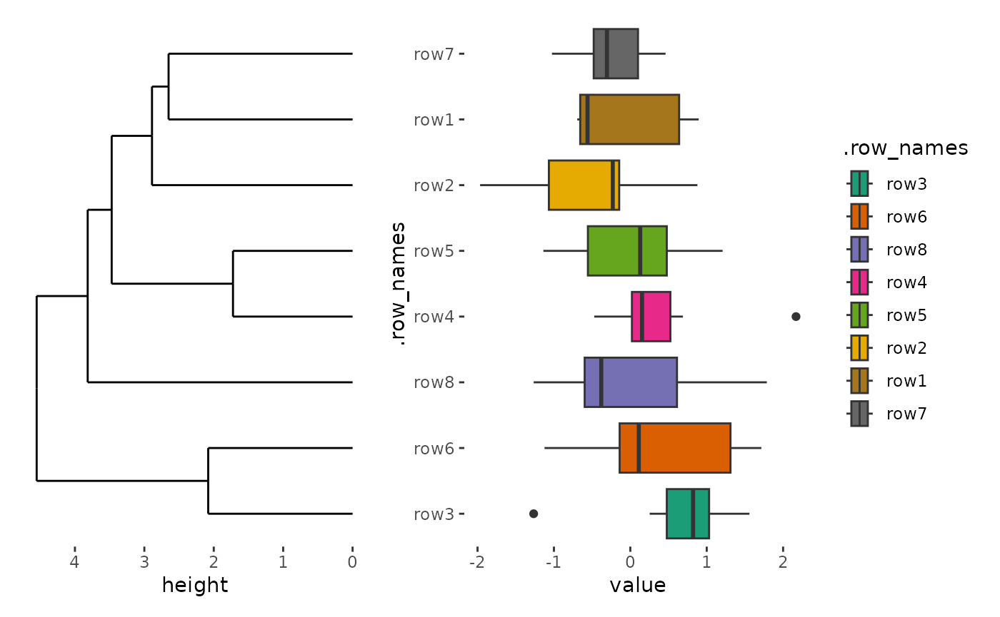
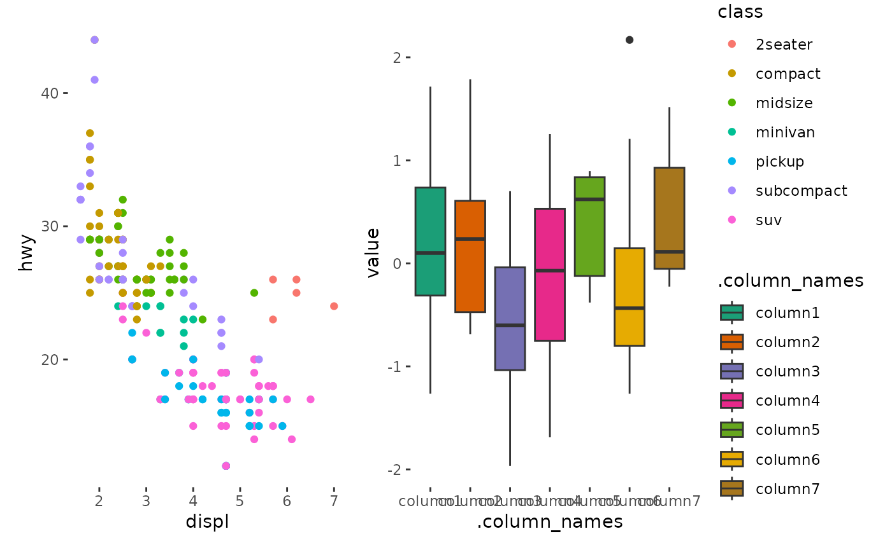

As discussed in vignette("heatmap-layout"), the
ggheatmap() function is a specialized form of
quad_layout(). Specifically, it is a variant of
quad_alignb(), which aligns observations both horizontally
and vertically.
quad_layout() arranges plots in the Quad-Side of a main
plot. Depending on whether you want to align observations in the
horizontal or vertical direction, there are
four main types of quad_layout(): -
quad_free/ggside: Never align observations. -
quad_alignh: Align observations in the horizontal
direction. - quad_alignv: Align observations in the
vertical direction. - quad_alignb: Align observations in
both horizontal and vertical directions.
quad_free()
quad_free() won’t align observations.
ggside() is an alias of quad_free(). It do the
same function of ggside
packge. This is particularly useful for metadata for summary graphics on
a continuous axis
input data
Like ggplot, you’ll need to provide input that can be
converted into a data frame. Internally, the
fortify_data_frame() function is used to handle this
conversion.
ggside(mpg) +
geom_point(aes(displ, hwy, colour = class))
annotation
Like ggheatmap(), annotations in
quad_free() can be placed at the top, left, bottom, and
right sides, but all annotations here use stack_free(),
meaning they don’t align observations. The data will be directly
inherited which is different from the
quad_alignb()/quad_alignh()/quad_alignv()
where the column annotation will transpose the layout matrix
Additionally, annotations can be manually initialized with
user-specified data using anno_init(), I’ll demonstrate it
in quad_alignh()/quad_alignv() section where
manual initialization is required.
ggside(mpg, aes(displ, hwy, colour = class)) -
# set default theme for all plots in the layout
plot_theme(theme_bw()) +
geom_point(size = 2) +
# add top annotation
anno_top(size = 0.3) -
# set default theme for the top annotation
plot_theme(theme_no_axes("tb")) +
# add a plot in the top annotation
ggfree() +
geom_density(aes(displ, y = after_stat(density), colour = class), position = "stack") +
# add right annotation
anno_right(size = 0.3) -
# set default theme for the right annotation
plot_theme(theme_no_axes("lr")) +
# add a plot in the right annotation
ggfree() +
geom_density(aes(x = after_stat(density), hwy, colour = class),
position = "stack"
) +
theme(axis.text.x = element_text(angle = 90, vjust = .5))
Unlike ggheatmap()/heatmap_layout(),
ggside()/quad_free() allows facetting for the
main plot, which should also be applied to the annotations for proper
alignment.
i2 <- iris
i2$Species2 <- rep(c("A", "B"), 75)
ggside(i2, aes(Sepal.Width, Sepal.Length, color = Species)) -
# set default theme for all plots in the layout
plot_theme(theme_bw()) +
geom_point(size = 2) +
facet_grid(Species ~ Species2) +
# add top annotation
anno_top(size = 0.3) -
# set default theme for the top annotation
plot_theme(theme_no_axes("tb")) +
# add a plot in the top annotation
ggfree() +
geom_density(aes(Sepal.Width, y = after_stat(density), colour = Species),
position = "stack"
) -
# we can utilize the `-` to set facet for all plots in the annotation
facet_grid(cols = vars(Species2)) +
# add right annotation
anno_right(size = 0.3) -
# set default theme for the right annotation
plot_theme(theme_no_axes("lr")) +
# add a plot in the right annotation
ggfree() +
geom_density(aes(x = after_stat(density), Sepal.Length, colour = Species),
position = "stack"
) +
theme(axis.text.x = element_text(angle = 90, vjust = .5)) -
# we can utilize the `-` to set facet for all plots in the annotation
facet_grid(rows = vars(Species))
quad_alignh()/quad_alignv()
quad_alignh() aligns observations horizontally, while
quad_alignv() aligns observations vertically.
input data
To align observations in the horizontal/vertical direction, you’ll
need to provide input that can be converted into a matrix. Internally,
the fortify_matrix() function is used to handle this
conversion, ensuring the input is in the correct format for
alignment.
The underlying ggplot data is the same with
ggheatmap()/heatmap_layout(), it is
recommended to use .y, or .row_names as the
y mapping in the main plot for quad_alignh()
but use .x or .column_names as the
x mapping in the main plot for
quad_alignv().
set.seed(123)
small_mat <- matrix(rnorm(56), nrow = 8)
rownames(small_mat) <- paste0("row", seq_len(nrow(small_mat)))
colnames(small_mat) <- paste0("column", seq_len(ncol(small_mat)))
# we'll align the horizontal direction
quad_alignh(small_mat) +
geom_boxplot(aes(value, .row_names, fill = .row_names)) +
scale_fill_brewer(palette = "Dark2")
# we'll align the vertical direction
quad_alignv(small_mat) +
geom_boxplot(aes(.column_names, value, fill = .column_names)) +
scale_fill_brewer(palette = "Dark2")
annotation
the same with ggheatmap()/heatmap_layout(),
we can add annotation in top, left, bottom, and right side. but the top
and bottom annotation in quad_alignh() is a
stack_free() which won’t align observations and left and
right annotation in quad_alignv() is a
stack_free() which won’t align observations.
For left and right annotation in quad_alignh(), they are
a stack_align() layout which will align observations, and
require a matrix in the layout data. So it can inherit from the parent
quad_layout() and we can add both ggalign()
and ggfree() and other align_*() functions to
the annotation.
quad_alignh(small_mat) +
geom_boxplot(aes(value, .row_names, fill = .row_names)) +
scale_fill_brewer(palette = "Dark2") +
anno_left() +
align_dendro()
For top and bottom annotation in quad_alignh(), they are
a stack_free() which won’t align observations, and require
a data frame in the layout data. In this way, we won’t transform the
matrix to a data frame and always prevent user from inheriting from the
parent layout matrix.
quad_alignh(small_mat) +
geom_boxplot(aes(value, .row_names, fill = .row_names)) +
scale_fill_brewer(palette = "Dark2") +
anno_top()
#> Error in `quad_layout_add()`:
#> ! Cannot initialize the top annotation stack.
#> ℹ `data` in `quad_alignh()` is a double matrix, but we need a <data.frame>.
#> ℹ Try using `anno_init()` to initialize the top annotation with self-customized
#> data.Manual initialization of annotations with anno_init() is
required in such cases:
quad_alignh(small_mat) +
geom_boxplot(aes(value, .row_names, fill = .row_names)) +
scale_fill_brewer(palette = "Dark2") +
# initialize the top annotation with a self-defined data frame
anno_init("top", data = mpg) +
# add a plot in the top annotation
ggfree(aes(displ, hwy, colour = class)) +
geom_point(aes(displ, hwy, colour = class))
The same with quad_alignh(), we need to manually
initialize the left and right annotations in
quad_alignv().
quad_alignv(small_mat) +
geom_boxplot(aes(.column_names, value, fill = .column_names)) +
scale_fill_brewer(palette = "Dark2") +
# initialize the left annotation with a self-defined data frame
anno_init("left", data = mpg) +
# add a plot in the top annotation
ggfree(aes(displ, hwy, colour = class)) +
geom_point(aes(displ, hwy, colour = class))
quad_alignb()
quad_alignb aligns observations in both horizontal and
vertical directions. It is a base version of
ggheatmap()/heatmap_layout(), it won’t add the
main plot geoms and default mapping automatically.
Session information
sessionInfo()
#> R version 4.4.2 (2024-10-31)
#> Platform: x86_64-pc-linux-gnu
#> Running under: Ubuntu 22.04.5 LTS
#>
#> Matrix products: default
#> BLAS: /usr/lib/x86_64-linux-gnu/openblas-pthread/libblas.so.3
#> LAPACK: /usr/lib/x86_64-linux-gnu/openblas-pthread/libopenblasp-r0.3.20.so; LAPACK version 3.10.0
#>
#> locale:
#> [1] LC_CTYPE=C.UTF-8 LC_NUMERIC=C LC_TIME=C.UTF-8
#> [4] LC_COLLATE=C.UTF-8 LC_MONETARY=C.UTF-8 LC_MESSAGES=C.UTF-8
#> [7] LC_PAPER=C.UTF-8 LC_NAME=C LC_ADDRESS=C
#> [10] LC_TELEPHONE=C LC_MEASUREMENT=C.UTF-8 LC_IDENTIFICATION=C
#>
#> time zone: UTC
#> tzcode source: system (glibc)
#>
#> attached base packages:
#> [1] stats graphics grDevices utils datasets methods base
#>
#> other attached packages:
#> [1] ggalign_0.0.4.9000 ggplot2_3.5.1
#>
#> loaded via a namespace (and not attached):
#> [1] vctrs_0.6.5 cli_3.6.3 knitr_1.49 rlang_1.1.4
#> [5] xfun_0.49 textshaping_0.4.0 jsonlite_1.8.9 labeling_0.4.3
#> [9] glue_1.8.0 colorspace_2.1-1 htmltools_0.5.8.1 ragg_1.3.3
#> [13] sass_0.4.9 fansi_1.0.6 scales_1.3.0 rmarkdown_2.29
#> [17] grid_4.4.2 tibble_3.2.1 evaluate_1.0.1 munsell_0.5.1
#> [21] jquerylib_0.1.4 fastmap_1.2.0 yaml_2.3.10 lifecycle_1.0.4
#> [25] compiler_4.4.2 RColorBrewer_1.1-3 fs_1.6.5 pkgconfig_2.0.3
#> [29] farver_2.1.2 systemfonts_1.1.0 digest_0.6.37 R6_2.5.1
#> [33] utf8_1.2.4 pillar_1.9.0 magrittr_2.0.3 bslib_0.8.0
#> [37] withr_3.0.2 tools_4.4.2 gtable_0.3.6 pkgdown_2.1.1
#> [41] cachem_1.1.0 desc_1.4.3